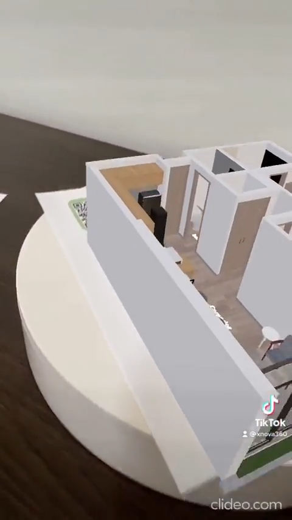
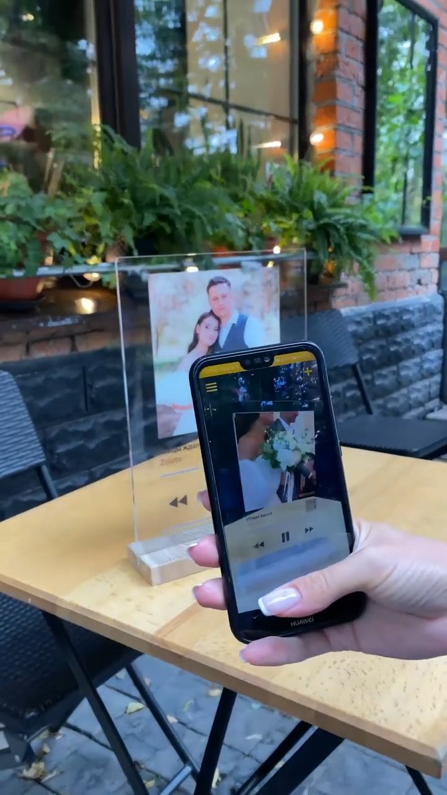
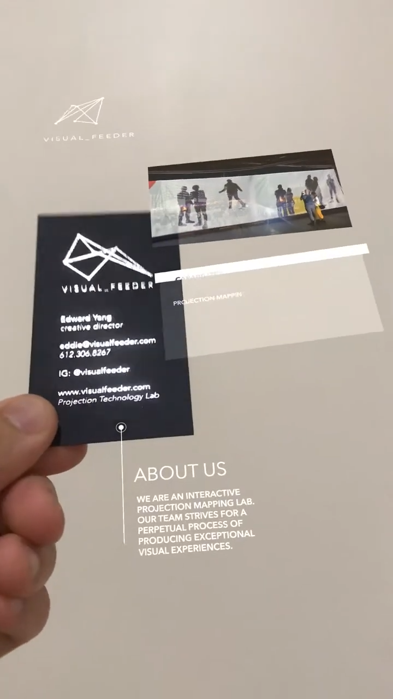

AR Premium Propuesta de implementación 04 de noviembre de 2026
WebAR · 3D · Video · QR
Una tarjeta que cobra vida.
Experiencias de realidad aumentada para tortas, celebraciones y negocios. El cliente escanea un QR, enfoca una tarjeta y descubre un modelo 3D, un video, una dedicatoria o una escena interactiva.
La idea central El QR abre la experiencia. La imagen impresa mantiene anclado el contenido en el mundo real.
Objetivo: ofrecer una experiencia premium propia, sin depender de KiviCube, usando motores abiertos y el backend de Misky Challay.
Misky Challay AR Studio
Escena reconocida Modelo 3D · Video · Dedicatoria
Escanea · Enfoca · DescubreUna experiencia compartible desde el navegador del celular.
01 · Referencias
Esto es lo que muestran los videos
Los tres ejemplos utilizan el mismo principio técnico: una imagen física funciona como objetivo de reconocimiento y la web dibuja contenido digital encima de ella.

Image Target + 3D
Proyecto inmobiliario
El plano impreso activa un modelo 3D que se puede explorar desde distintos ángulos.

Image Target + Video
Stories AR
La fotografía de la tarjeta dispara un video que aparece alineado con la pieza física.

Layers + Interactions
Tarjeta empresarial
Una tarjeta activa video, logotipo, texto y elementos informativos en varias capas.
Flujo de la experiencia
1
QR
Abre una URL pública y temporal.
2
Cámara
El navegador solicita permiso HTTPS.
3
Reconoce
MindAR encuentra la imagen objetivo.
4
Renderiza
Three.js muestra modelos, video y texto.
5
Interactúa
El visitante gira, reproduce o pulsa.
Aplicación en tortas: la tarjeta puede incluir la foto de la torta, un personaje, el nombre del festejado, un video de saludo, música y un modelo 3D de la decoración.
02 · Producto
Así se vería dentro de Misky Challay
El cliente recibe una experiencia terminada y el equipo trabaja desde un estudio privado con plantillas, archivos y aprobación antes de publicar.
Experiencia del cliente
Compra la torta y añade Experiencia AR Premium.
Escribe la dedicatoria y sube una foto o video.
Recibe una tarjeta con QR para imprimir o compartir.
Escanea el QR y enfoca toda la tarjeta.
Ve la escena 3D, el video y los botones interactivos.
Trabajo del equipo
Elige una plantilla: cumpleaños, aniversario, empresa o inmobiliaria.
Sube el GLB, video, audio e imagen objetivo.
Coloca los elementos sobre la tarjeta.
Previsualiza en escritorio y móvil.
Solicita aprobación y publica una versión.
Editor visual premium
La diferencia con el editor actual: hoy configuramos una escena mediante formularios. El plan premium agrega un lienzo con capas, objetos y acciones reutilizables, como el que se observa en una plataforma de creación AR.
03 · Ejemplo de uso
Así se vería una torta Misky Challay con AR
Ejemplo de una torta de celebración con tarjeta física, modelo 3D, dedicatoria y contenido multimedia. La composición visual puede adaptarse al nombre, colores y estilo de cada pedido.
Misky Challay
AR Premium
Tu momento comienza aquí
Para ValentinaUna tarjeta elegante que acompaña la torta y sirve como imagen objetivo para la experiencia.
Escanea y enfoca Abre la cámara desde el celular y apunta a toda la tarjeta.
Misky Challay · AR×
¡Feliz cumpleaños, Valentina!Una sorpresa hecha para celebrar contigo
▶ Ver video♫ Audio↗ Compartir
1 · CompraEl cliente agrega AR Premium a su torta y escribe la dedicatoria.
2 · PersonalizaEl equipo elige una plantilla y carga la foto, video o modelo 3D.
3 · DescubreLa persona escanea, enfoca la tarjeta y ve la torta cobrar vida.
4 · CompartePuede reproducir el saludo, guardar la experiencia o enviar el enlace.
Detalles que elevan la experiencia: permiso de cámara explicado en una pantalla clara · indicador de carga · botón de ayuda · fallback a visor 3D · diseño accesible y optimizado para móvil.
04 · Tecnología
Arquitectura propuesta
La implementación aprovecha la base existente y agrega una capa de escenas genéricas. El reconocimiento y el render permanecen en el navegador; el backend gobierna archivos, versiones, permisos y publicación.
Frontend AR
React + TypeScript
Three.js para 3D, video-texturas y animaciones
MindAR para imagen y rostro
WebXR para colocar modelos sobre superficies
Fallback a visor 3D cuando el teléfono no tiene AR
Backend y operación
Escenas versionadas y plantillas
Biblioteca de archivos con validación
Revisión, aprobación, publicación y pausa
QR y enlaces con vigencia
Planes, límites, permisos y analítica
Capacidad premium
Base actual
Ampliación necesaria
Imagen AR
Disponible
Multiobjetivo, versiones de tarjeta y mejor previsualización.
Modelo 3D
Disponible
Capas, hotspots, animaciones y compresión automática.
Video sobre tarjeta
Disponible
Controles, eventos de toque y videos con transparencia.
Editor visual
Formulario especializado
Canvas drag-and-drop con lista de capas.
Analítica
Por integrar
Escaneos, sesiones, reproducciones y conversiones.
Multiempresa
Por integrar
Separación de negocios, usuarios, archivos y dominios.
Requisitos de producción: HTTPS, cámara permitida, tarjetas con buen contraste, pruebas reales en Android y iPhone, almacenamiento/CDN para archivos y consentimiento para fotografías, videos y música de los clientes.
05 · Implementación
Plan para construir AR Premium
La primera versión puede entregar exactamente el tipo de experiencia mostrado en los videos. Las funciones más amplias se incorporan sobre el mismo núcleo.
01
Image AR comercial
Tarjeta, QR, imagen objetivo, GLB, video, audio y publicación por pedido.
02
Studio visual
Capas, drag-and-drop, plantillas, transformaciones, animaciones y eventos.
03
AR avanzada
World AR, rostro, 360°, multiimagen y fallback inteligente por dispositivo.
04
Producto SaaS
Multiempresa, dominios, CDN, cuotas, analítica avanzada y planes.
Misky Challay AR PremiumAdicional comercial por pedido
Una experiencia 3D o video personalizada
Tarjeta descargable con QR
Imagen de reconocimiento compilada
Dedicatoria y branding de la pastelería
Enlace público con vigencia
Dos rondas de revisión
Estadísticas básicas de visitas
Fallback a visor 3D sin cámara
Recomendación
Construirlo dentro de Misky Challay, usando MindAR, Three.js y WebXR como motores abiertos, y desarrollar nosotros el editor, las escenas, el almacenamiento, la publicación, la analítica y el cobro. KiviCube puede servir para comparar referencias, pero no debe ser la dependencia central del producto.
Resultado esperado: una experiencia como las referencias: escanear una tarjeta, reconocer la imagen y mostrar una torta 3D, un video, una dedicatoria y acciones interactivas desde el navegador, sin instalar una aplicación.
 Tu momento comienza aquí
Tu momento comienza aquí